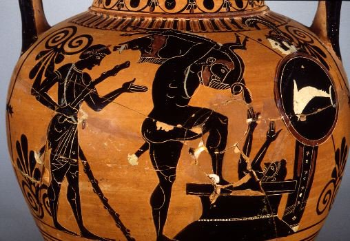

|
III THE ERYMANTHIAN BOAR Libra - September-October Air Controlling one's own strength Separation The swift, tough-hided beast with the ivory tusk Shatters the wood and drags the air surrounding it That BALANCES its run and its bulk, transmuted Into a boar of wind of bristle and of musk. But fleeter is the one whose hunting net has seized And stopped its flight. And in the grip it can't withstand The brute feels its neck yield and its helpless spine bend Under the knee, until out of him strength is squeezed. By his own victory appalled, the champion Sees that the wood was to the freak shrine and prison. He drags from the forest its guest and he provides To him who was mere strength and rage a new blazon: Honour to the worker who, by his orison, Tames the fire and measures, tips the scales and DIVIDES. Transl. Ch.Souchon (c) September 2005
Le troisième Travail d'Hercule le conduisit dans la vallée d'Argolide à la recherche d'un monstrueux sanglier qu'il devait ramener vivant. Il débusqua enfin le monstre sur le Mont Erymanthe et parvint à le diriger vers un banc de neige, où il s'immobilisa. Il se jeta sur son échine et le rapporta, sur ses épaules à Eurysthée qui fut si effrayé qu'il courut se cacher dans une cuve d'airain.
The third Labour took Hercules to the Argolid valley in quest of an enormous boar, which he had to bring back alive. He finally located the boar on Mount Erymanthus and managed to drive it into a snowbank, immobilizing it. Flinging it up onto his shoulder, he carried it back to Eurystheus, who was so afraid that he ran and hid in a bronze storage jar.
|
Listen to 'Erymanthian Boar' in English
|